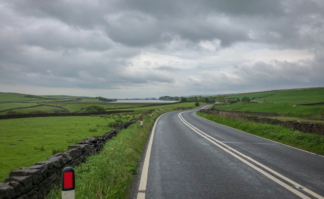

Шоссе, ТТ и Грэвел
Шоссе, ТТ и Грэвел
Триатлонные старты, горные серпантины или грейвел заезды по живописным маршрутам – нужно только определиться с выбором велосипеда и отправиться в путь.
Cannondale Systemsix


«Катайся много или мало, долго или коротко, как хочешь - но катайся»
Шоссе
На шоссейном велосипеде можно ездить по асфальту на разных градиентах: будь то горы или равнины. Гонки проходят в командном пелотоне, но тренироваться можно и самостоятельно.


Грэвел
Грэвел похож на шоссейный велосипед, но конструкция рамы немного отличается, и на нём стоят более широкие покрышки, всё для того чтобы проехать по лёгкому бездорожью.

ТТ
ТТ — это велосипед для триатлона или раздельного старта, гооняют на таком велике только по равнинному асфальту, велик очень быстрые и аэродинамичный.
Велосипеды
Тренировки
Тренировки
Чтобы найти маршрут для тренировки можно воспользоваться сервисом Komoot, а записать эти тренировки поможет приложение Strava, а также это приложение позволит построить тренировочный план.